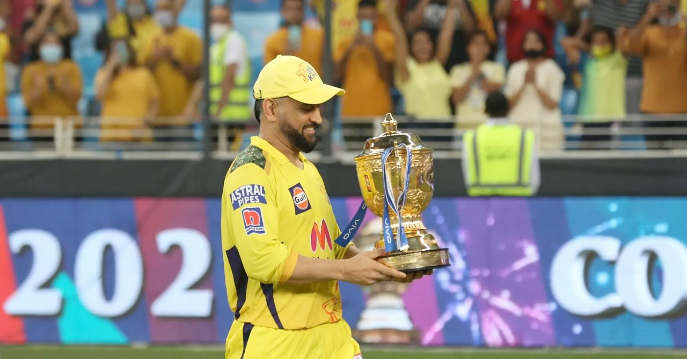
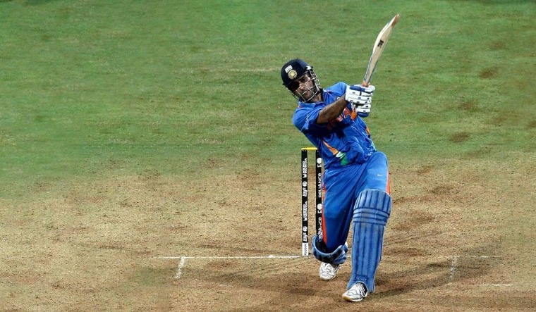
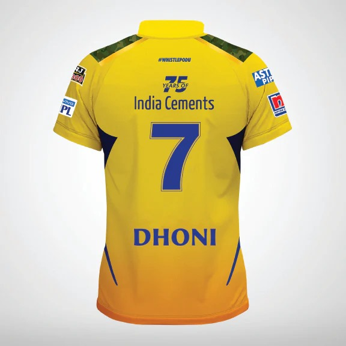

Under Dhoni's captaincy, CSK has won multiple IPL titles.

Dhoni is known for his calm demeanor and finishing matches with ease.

Dhoni's iconic jersey number 7 has become legendary in cricket.
MS Dhoni, also known as 'Captain Cool', is one of the most successful captains in the history of cricket. Born on July 7, 1981, in Ranchi, India, Dhoni's journey to stardom began with his exceptional performances in domestic cricket and eventually led to his debut for the Indian national team in 2004.
Dhoni's leadership qualities came to the fore when he was appointed as the captain of the Indian cricket team in 2007. Under his captaincy, India won the inaugural T20 World Cup in 2007, the ICC Cricket World Cup in 2011, and the ICC Champions Trophy in 2013. Known for his unflappable temperament and sharp cricketing mind, Dhoni is celebrated for his strategic acumen and the ability to remain calm under pressure.
In the Indian Premier League (IPL), Dhoni has been synonymous with the Chennai Super Kings (CSK). Since the inception of the IPL in 2008, he has led CSK to numerous victories, including multiple IPL titles and Champions League T20 trophies. His contributions to the team have made him a beloved figure among CSK fans and a legend in the cricketing world.
Off the field, Dhoni is known for his philanthropic efforts and his love for sports beyond cricket. He has a keen interest in football and is the co-owner of Chennaiyin FC, a football club in the Indian Super League. Dhoni is also an avid biker and has a passion for motorcycles.
Dhoni's achievements have earned him numerous accolades, including the prestigious Rajiv Gandhi Khel Ratna award, the Padma Shri, and the Padma Bhushan. His legacy extends beyond his records and titles; he is admired for his humility, sportsmanship, and the positive influence he has had on young cricketers around the world.
Feel free to get in touch for more information about MS Dhoni and his achievements.